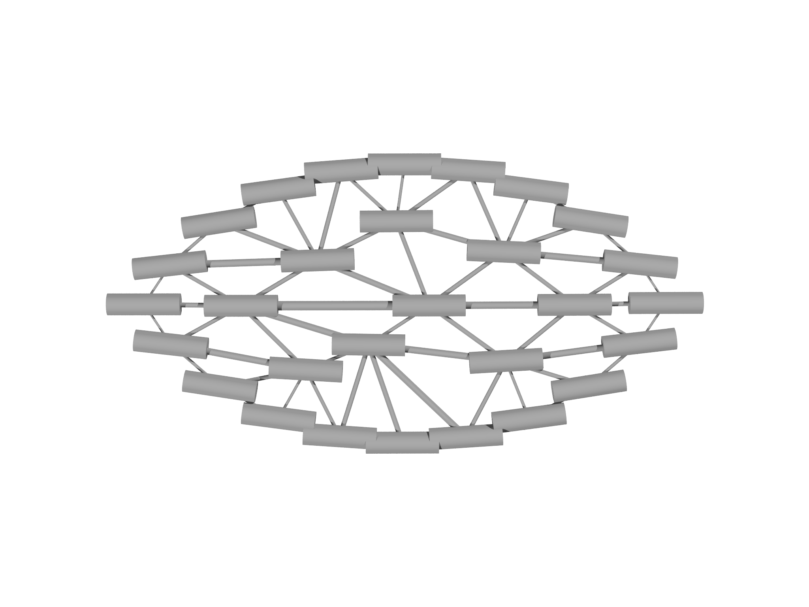
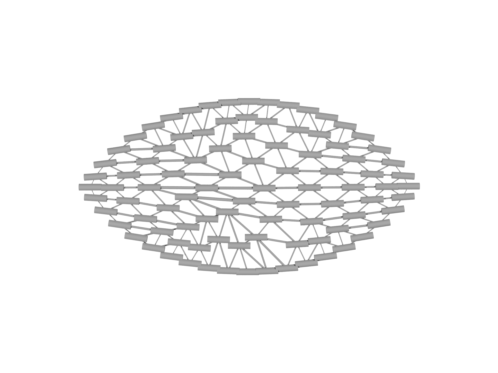
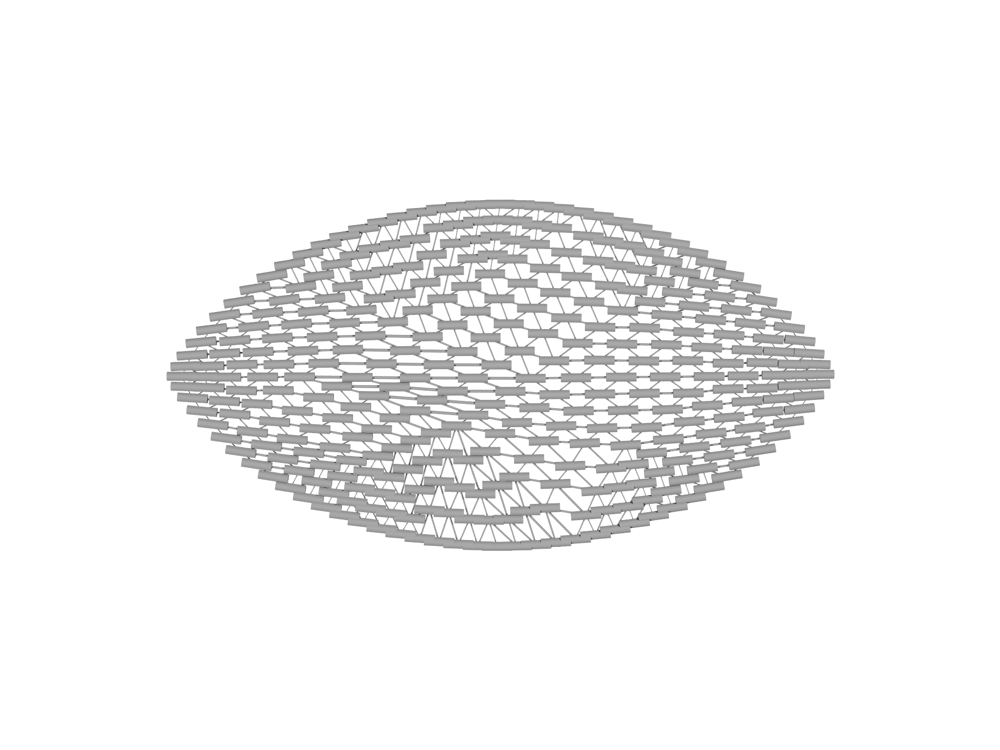

Refinement
We have now solved our first shape optimization problem, and the
complete problem script is provided in the examples/tutorial folder
inside the git repository as tutorial.morpho. The result we have
obtained in Fig. 4.5 is, however, a very coarse, low resolution
solution comprising only a relatively small number of elements. To gain
an improved solution, we need to refine our mesh. Because modifying
the mesh also requires us to update other data structures like fields
and selections, a special MeshRefiner object is used to perform the
refinement.
To perform refinement we:
- Create a
MeshRefinerobject, providing it a list of all theMesh,FieldandSelectionobjects (i.e. the mesh and objects that directly depend on it) that need to be updated:var mr=MeshRefiner([m, nn, bnd]) // Set the refiner up - Call the
refinemethod on theMeshRefinerobject to actually perform the refinement. This method returns aDictionaryobject that maps the old objects to potentially newly created ones.var refmap=mr.refine() // Perform the refinement - Tell any other objects that refer to the mesh, fields or selections
to update their references using
refmap. For example,OptimizationProblemandOptimizerobjects are typically updated at this step.for (el in [problem, sopt, fopt]) el.update(refmap) // Update the problem - Update our own references
m=refmap[m]; nn=refmap[nn]; bnd=refmap[bnd] // Update variables

We insert this code after our optimization section, which causes morpho to successively optimize and refine[^4]. The resulting optimized shapes are displayed in Fig. 4.6.
// Optimization loop
var refmax = 3
for (refiter in 1..refmax) {
print "===Refinement level ${refiter}==="
for (i in 1..100) {
fopt.linesearch(20)
sopt.linesearch(20)
}
if (refiter==refmax) break
// Refinement
var mr=MeshRefiner([m, nn, bnd]) // Set the refiner up
var refmap=mr.refine() // Perform the refinement
for (el in [problem, sopt, fopt]) el.update(refmap) // Update the problem
m=refmap[m]; nn=refmap[nn]; bnd=refmap[bnd] // Update variables
}